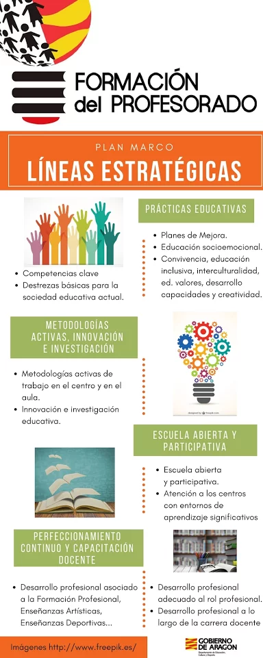

Unidad 3. Sistema aragonés de formación del profesorado. Plan Marco y Decreto de formación vigente.
El actual sistema aragonés de formación del profesorado se encuentra actualmente en revisión. No obstante, lo que toca es analizar el sistema actual y apuntar hacia donde pueden ir los cambios.
El sistema aragonés se articula en el DECRETO 105/2013, de 11 de junio.
En este Decreto además de desarrollar la finalidad de la formación se plantean cuestiones sobre la planificación de la misma, la estructura de la red y su funcionamiento.
Planificación (artículo 4). Se establecen como instrumentos de planificación:
El Plan Marco Aragonés de Formación del Profesorado.
Es un plan que abarca 4 años de implantación. El primer Plan Marco Aragonés de Formación del Profesorado fue aprobado por ORDEN ECD 309/2016, de 18 de marzo. Como anécdota, una página salió mal maquetada en el BOA y se rectificó en una CORRECCIÓN DE ERRORES. Las líneas estratégicas de formación de este Plan Marco, tienen una clara vinculación con la innovación e investigación educativa, siendo el punto de partida de redes de trabajo entre equipos docentes y, en su caso, con las universidades o con los diferentes miembros de la comunidad educativa, como base de una mejora cualitativa de la educación.
La formación del profesorado se ha de articular en torno a la reflexión y el debate sobre qué prácticas son las más adecuadas con el fin de lograr una mayor capacitación y competencia profesional como elemento esencial para obtener mejores resultados tanto del docente como del alumnado.
Para llegar a la consecución de esta finalidad, este Plan Marco Aragonés de Formación del Profesorado plantea las siguientes líneas estratégicas de formación, las cuales, dada su inequívoca interrelación, no se proponen como elementos aislados, sino como una propuesta en conjunto de trabajo para la formación del profesorado:
Línea I. Formación para la mejora de las prácticas educativas
Línea II. Formación para el impulso de las metodologías activas, la innovación educativa y la investigación
Línea III. Formación para el apoyo a una escuela abierta y participativa
Línea IV. Formación para el perfeccionamiento continuo y capacitación profesional docente
Cada una de estas líneas se desagrega en ejes formativos y objetivos más concretos, agrupados en función de su naturaleza y contenido, de modo que establece líneas, ejes y contenidos, yendo de menor a mayor nivel de concreción.
